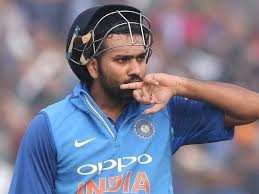
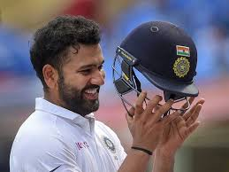

Rohit Sharma is a prominent Indian cricketer known for his aggressive batting style and exceptional record-setting performances. His major achievements include winning the ICC Champions Trophy (2013) and T20 World Cup (2007, 2024), captaining Mumbai Indians to five IPL titles, and setting world records such as the highest individual score in an ODI (\(264\)) and three double-centuries in ODIs. He has received major Indian awards like the Arjuna Award (2015) and the Rajiv Gandhi Khel Ratna (2020).
1.World Cup Champion: Won the inaugural T20 World Cup in 2007 and captained India to victory in the 2024 T20 World Cup.
2.Highest Individual Score:
Holds the world record for the highest individual score in a One Day International (ODI) with \(264\) runs.ODI Double
3.Centuries:Is the only player with three double-centuries in ODI cricket.Most Sixes: Holds the record for most sixes in international cricket across all formats.T20I
4.Milestones:Most runs in T20 Internationals.Most sixes in T20 Internationals.Joint-most centuries in T20Is.ICC
5.Awards:ICC Men's ODI Cricketer of the Year (2019).Named in the ICC Men's ODI and Test Teams of the Year multiple times.2019 Cricket World Cup: Scored a record five centuries in a single World Cup tournament and won the Golden Bat for being the leading run-scorer.